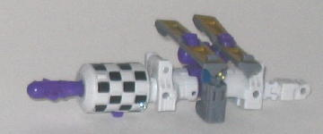
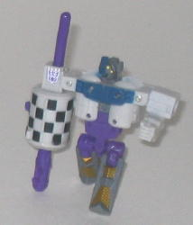
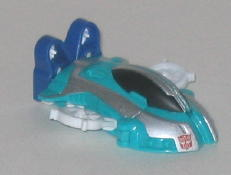
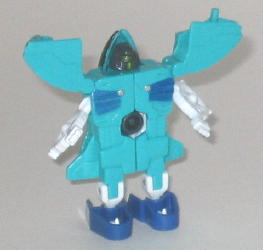

Scrap
Iron vs. Grindor
Scrap
Iron vs. Grindor
Size
: Mini-Con (2-pack)
Overall Rating
: 5.2
 Scrap
Iron
Scrap
Iron


Allegiance
: Decepticon, Minicon
Difficulty of Transformation
: Easy
Color Scheme
: Purple, grayish white,
moderately dark gray, and some black, bright yellow, dull metallic gold,
and dark navy blue
Individual Rating
: 6.6
(NOTE: Because this toy is a repaint, this
is not a full-blown review. This mainly covers any changes made to the
toy and the color scheme, and merely compares it to Armada Astroscope.
For a review on the mold itself, read the review of Armada Astroscope
here
.)
Scrap Iron has a considerably
more realistic paint job than either of this mold's previous paint jobs,
though the purple still keeps it from being completely realistic. The white
works very well as a main color, and the purple and gray are great secondary
colors that are very fitting for a Decepticon-allied Minicon. Scrap Iron
also has a pretty good number of paint apps-- the gold solar panel and
blue chest paint apps look the best and contrast nicely with their surrounding
colors. The "checkerboard" pattern on the missile launcher is also pretty
cool, and this particular paint app fits in particularly well with the
(relatively) realistic color scheme of the toy.
No mold changes have
been made to Scrap Iron, so he unfortunately still suffers from having
his parts easily pop off during transformation. The toy also has a Decepticon
emblem added to the right shoulder of the robot mode, though because of
its placement, it cannot be seen in satellite mode.
Scrap Iron Bio
:
Scrap Iron got his name because of his
talent of locking onto and destroying moving targets from space. You'd
know you were in his target zone when you stumbled across the unidentifiable
remains of whatever was there before. He's not too into the idea of running
a defensive operation in deeps space, which was why he was so glad to hear
that the Street Action Team was on its way. He's never met them, but it's
nice to have the opportunity to destroy a celebrity.
Strength: 7.5
Intelligence: 9.0
Speed: 10.0
Endurance: 10.0
Rank: 4.5
Courage: 6.0
Fireblast: 10.0
Skill: 9.0
 Grindor
Grindor


Allegiance
: Autobot, Minicon
Difficulty of Transformation
: Very
Easy
Color Scheme
: Sea foam bluish green,
white, silver, charcoal black, and some black, dull metallic jungle green,
moderately dark blue, and moderately dark metallic blue
Individual Rating
: 3.7
(NOTE: Because this toy is a repaint, this
is not a full-blown review. This mainly covers any changes made to the
toy and the color scheme, and merely compares it to Energon Grindor. For
a review on the mold itself, read the review of Energon Grindor
here
.)
Ugh... and I thought
Grindor couldn't get any WORSE than his Energon toy. The white and dark
blue go together well enough, and the black and silver used for the head
and vehicle mode are pretty nice accent colors. The metallic green used
for Grindor's visor and faceplate are also a very attractive shade, and
look very nice against the charcoal black. However... dear PRIMUS, is that
bluish green five hundred shades of UG-LEE. I mean, ick, what were they
thinking? Even though it doesn't outright clash with the other colors (except
maybe the silver), it's just an incredibly ugly shade of color, regardless
of on what Transformer and in what combination it's used in. Blah.
No mold changes have
been made to Grindor, but an Autobot symbol has been added to the right
side of his front vehicle mode fender.
Grindor Bio
:
Like High Wire, Grindor has fond memories
of the peace they found on Earth after the end of the Energon Battles.
He had fully supported the formation of an independent Mini-Con state on
the moons of Cybertron, and was a local booster of the Mini-Con Council
of Sages. He believes that all Mini-Cons can and should live in peace,
and he still harbors hopes that the conflict with the rebels can be resolved
without too much fighting.
Strength: 8.0
Intelligence: 10.0
Speed: 7.5
Endurance: 8.0
Rank: 5.0
Courage: 7.0
Fireblast: 5.5
Skill: 8.0
Scrap Iron vs. Grindor
is certainly a very mixed bag. Scrap Iron is an above-average mold for
a Minicon and has a very nice, attractive color scheme. On the other hand,
Grindor is a very ugly mold (at least in robot mode) with a very ugly color
scheme. Thus, because of Grindor's overall pooey-ness, I can't recommend
this 2-pack unless you are a Minicon completist or you just HAVE to form
Perceptor and the
Umbral Blaster
.
THere's several Transformers out now that are more worth your money than
this 2-pack.
Review by Beastbot
Back to Transformers:
Cybertron Index